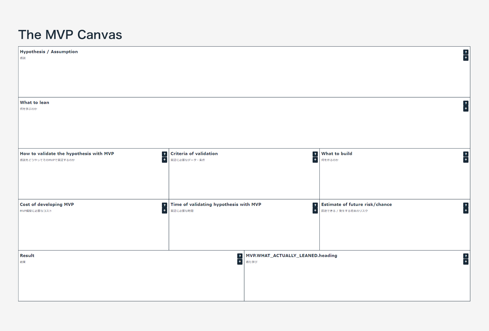
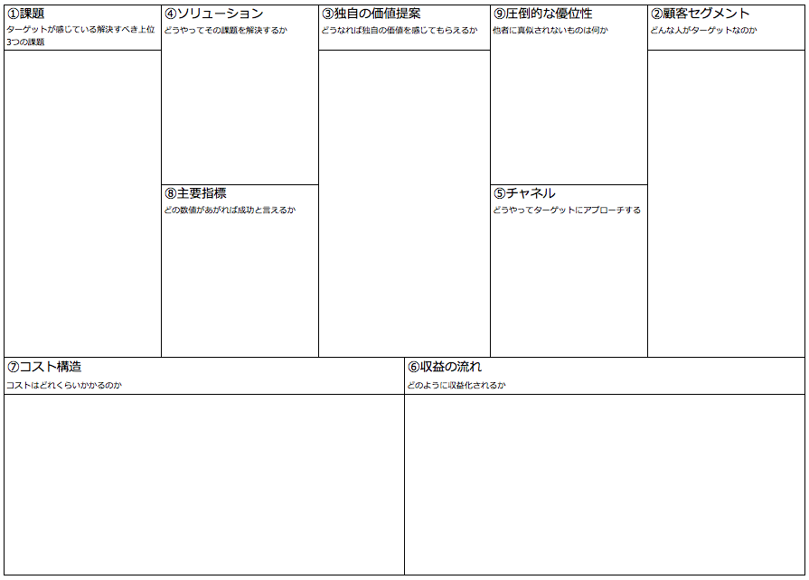
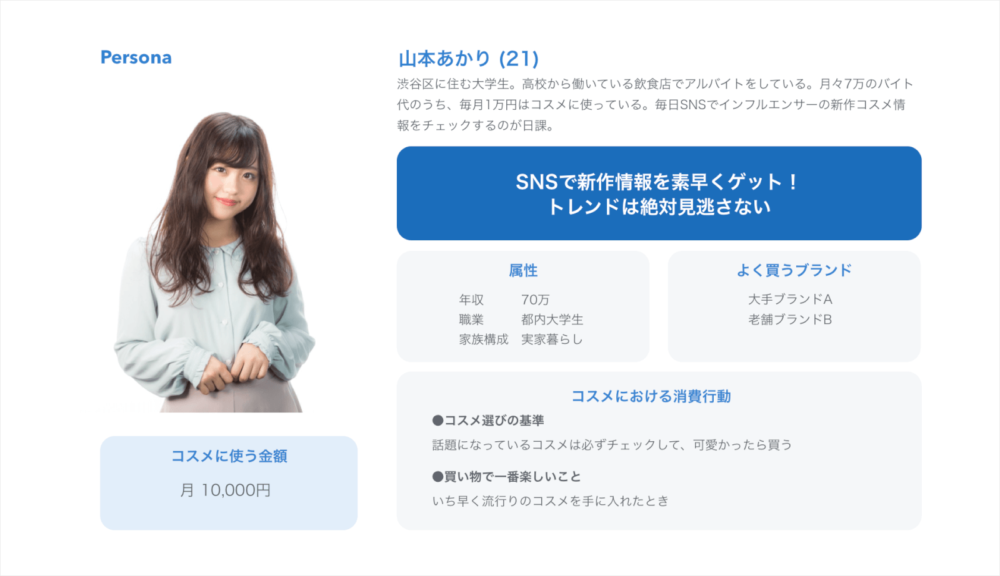
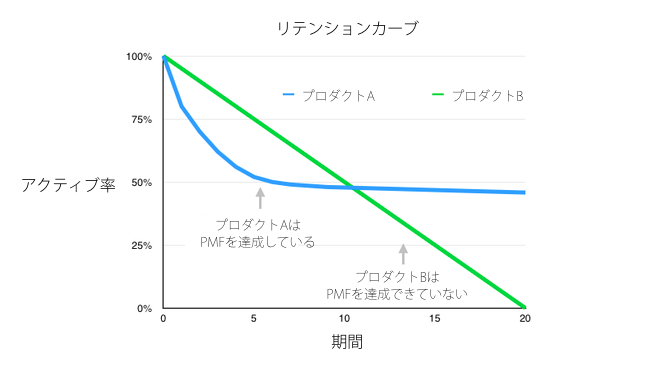
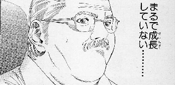

Agenda
- トレーニング概要
- スタートアップロードマップ
- ケーススタディ
- 実践リーン・スタートアップ
トレーニング概要
リーン・スタートアップを学んでプロトタイプを作成しよう！
Step1: Idearation
スタートアップのはじめのコアアイデアを見つけるステップです。
コアアイデアとはすなわち、「誰のどんな問題をどうやって解決するか」
スタートアップ思考
Peter Thiel の言う「誰もが信じていない自分だけの大切な真実」を見つけて、誰もが見落としているからこそ、それが正しければ短期間に一気にスケールが可能である
自分の想像する未来の仮説に賭けること
誰もが見落としている、一見不合理で狂ったアイデアに賭けること
他人が見ていない場所を見ようとすること
まだ築かれていない、価値ある企業とは何かを考えること
Step2: Lean Startup (リーンスタートアップ)
アイデアの前提となるユーザーの課題が本当に存在するか、アプローチ方法が間違った前提に立脚していないかを検証するステップ
MVP (Minimum Viable Product)
MVPとは Minimum Viable Product の略で、「最低限実用に足る製品」などと訳される。
ここでいう「実用に足る」というのは、「仮説検証から学びを得るために過不足がない」という意味。

ペーパープロトタイプ
https://prottapp.com
プロトタイプ（β 版）
試験やデモ用に作られる実験機。完成版ではないものの、実際に動作する製品を作り、クローズドβ版などテストユーザに使用してもらいフィードバックを得る
オズの魔法使い
システム化されているように見えるが、実際は生身の人間が手動で実行することで、大掛かりなシステム開発の前にユーザニーズを確かめる手法
Step3: Lean Canvas (リーンキャンバス)
サービスアイデアをビジネスモデルへと昇華させるステップ。 そのアイデアがきちんとビジネスとしてスケールするものかを検証

Step4: Lean UX
サービスのコアの体験（Unique Value Proposition）は何かを定義
ペルソナ
ペルソナとは、商品やサービスのターゲットとなる架空のユーザー像

Step5: Agile Development
効率的にそのサービスを開発しローンチするステップ
Step6: Product Market Fit
ローンチしたサービスが目指しているマーケットに対して最適なものになっているかを検証
プロダクトマーケットフィットの検証
Market Fit Survey
「あなたは、このプロダクトが使えなくなったらどう感じますか？」
この質問への回答に対して、40％以上の人が「とても残念に思う」と回答した場合に、PMFを達成したとみなします。
エンゲージメント検証
顧客が「実際に何をしているか」というデータを基にPMFを検証
ex
インスタなどのサービスでは、エンゲージメントデータは週、または日に、１ユーザーあたり何枚の写真をシェアしたか
メッセージグサービスでは、1ユーザーあたり1日に何枚のメッセージを送ったか
注意点
- PV数ではなく、イベントやアクションの回数で計測
- エンゲージメントデータは、必ずそのプロダクトのコアな体験に関わるデータであること
リテンションカーブ
アクティブ率を縦軸に、期間を横軸にとってリテンションカーブを作成
もしそのカーブが以下の図のようにどこかの点でフラットになるなら、あなたのプロダクトは「ある特定のマーケットにおいて」PMFを達成したと言える

Step7: Growth Hack
サービスのユーザー数や収益を指数関数的に伸ばしていくステップ
ファネルを可視化する
ファネルとは、行動がより深くなるにつれて、その行動を行うユーザーが段々減っていく
様が漏斗(ろうと)に似ていることから、 グロースハックやマーケティングの領域で用いられる概念
- AARRRという５ステップ間でのファネル可視化
- … 獲得、活性化、継続、紹介、収益、どこがネックになっているのかを視覚化
- 登録フロー周りでのファネル可視化
- 一度は登録しようと思ったユーザーがどのステップで離脱しているのかを視覚化
- Retention周りでのファネル可視化
- ユーザー体験を数ステップに分け、どの段階でユーザーが離脱してしまっているのかを可視化
改善感度の優先付け
インパクトの高い順に改善優先度決定
仮説リストアップ
ボトルネックとなっている課題の原因を発見する
施策リストアップ
課題を解決する施策をリストアップし、 インパクトが大きく、工数が少ないものから高速で施策を打っていく
仮説・実験・学習
仮説 → 実験(施策実行)に、学習を加えたサイクルを高速で回す
レバレッジを見つける
レバレッジとは、テコの原理のように、その部分に力を加えると、全体に数倍の作用するもの
Facebookの例では初日に、7人以上と友達になると、継続率が数倍に上がるデータをもとに、
そこにレバレッジをかけて施策をして最終的に高い継続率を達成していった。
ZERO to ONE
プロプライエタリテクノロジー
２番手より１０倍優れている技術を持っていること
ネットワーク効果
「友達が使っていれば自分も使う」のような、利用者が増えるほど利便性が高まるサービスのこと
規模の経済
規模の経済の影響を多大に受けるように、
規模拡大の可能性を最初のデザインに組み込んでいること
ブランディング
その企業を象徴する独自のブランドイメージを持っていること
独占するために小さな市場から始めよ
MVPキャンバス
プロゲート / 他スクール終了者も実践スキルとは程遠い...

リーンUX
オンライン実行環境
オフラインのフォローアップ
オンラインでの継続施策 (コミュニティ)
実践的スキル習得
採用へシームレスに接続
PMF
エンゲージメント計測 (3ヶ月)
アーリーアダプター獲得
- 週の課題終了数
- ベロシティ計測 - 3ヶ月で終了予定のカリキュラムでの進捗率
Growth Hack
Next - レバレッジを見つける